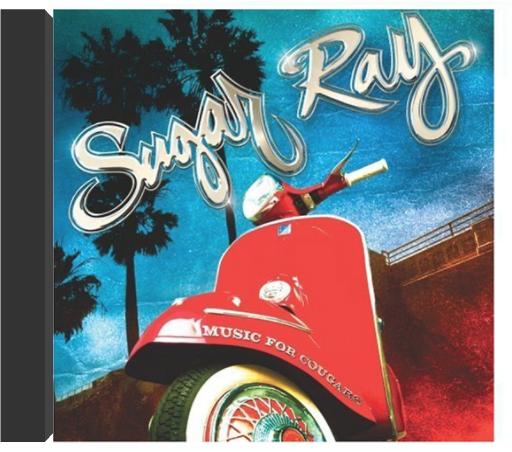

in the pursuit of leisuresugar ray in the pursuit of leisuresugar ray  Bien qu'il ne soit pas le meilleur opus du groupe Sugar Ray, In The Pursuit Of Leisure n'est pas négligeable pour autant. Sinon un virage, il marque une évolution pour le moins surprenante dans la carrière de la formation, à moins qu'un léger manque d'inspiration n'ait parasité sa réalisation. Que le fan se rassure : on retrouve là, parfaitement digérées, les principales influences de Mark McGrath, qui signe des chansons pop non dénuées d'humour. On s'interrogera juste sur la nécessité de certains morceaux, comme celui curieusement enregistré en compagnie de Shaggy. Si l'acquisition est probablement nécessaire pour les amateurs du groupe, les autres devraient commencer par les albums antérieurs. —Hervé Comte music for cougarssugar ray 2009 release from the American Alt-Rock band, their first studio set after a six year hiatus. The best part about the album-by far-is the title. It's called Music For Cougars. It's a hilarious title from a band that left the scene in 2003 when they realized that they weren't selling many records or getting much airplay. It was at that point that Mark McGrath reinvented himself as a host and landed one of the main spots on Extra. After a fun run on the show, McGrath decided it was time to go back to his roots and reunite with the band.  build bridgessure fire soul ensemble build bridgessure fire soul ensemble Build Bridges combines stellar musicianship with unlimited drive and lag proof swing-ability. You can hear the maturity of their sound, which inadvertently allows you to appreciate their previous recordings even more. They're all in the same ballpark yet seem to be on a completely different playing field. Tim Felten's lineup not only shows his keen ability to pick top choice artists, but also shows his sense of direction and investment to high quality musicians. The Sure Fire Soul Ensemble is a staple of the west cost soul/jazz/funk scene and with their third LP, they solidify their position. Heavy grooves and drums, with top tier musicianship and writing. Build Bridges is just as sophisticated as it is soulful and funky! à la faveur de l'automnetété Toujours L'Air de rien, Tété, ses dreads, ses lunettes et sa guitare, déboule avec un deuxième album studio intitulé À la faveur de l’automne. Le Sénagalais-Nancéen chaloupe sur des mélodies ciselées chantées d’une voix chaleureuse, loin de la tendance en vogue du parler-chanter ou brailler. Cette fois, les recueils harmoniques et humoristiques ("Une bonne paire de claques") de Tété, mis en écrin par les Valentins, sont poinçonnés de mandoline, de mélodica, de banjo, de cor ou de violons. Toute une fanfare de poche qui illumine en contrepoint la musique de chambre pop-folk parfois blues ("Les Matins de peu") de Tété, lequel, pour incarner le style cool, ne tait pas pour autant sa mélancolie ("Ton absence"). À la faveur de l’automne dévoile la face acoustique, intimiste et romantique de Tété. —Sabrina Silamo bubble gumthe 9th creation It is well known that talent never guarantees any success in the music industry. This sentence summarizes the story of The 9th Creation, one of the best soul, funk, disco and boogie band to make it out of Stockton, CA. Founded by J.D. and A.D Burrise in 1970, the 9th Creation went on for almost two decades and released 3 albums and half a dozen singles that regularly flirted with the US Charts, getting them featured on Soul Train in 1975 and allowing them to tour North America and Japan a few times over. 9th Creation regularly shared the bill with Irma Thomas, James Brown, The Whispers, The Sylvers, The Main Ingredient, Con Funk Shun and many others. The music that J.D, A.D Burrise and their 10-12 band members created was a perfect combination of West Coast raw soul, disco and funk that resulted in a religious fan following across the globe. To this day, The 9th Creation has been sampled by Pete Rock & C.L. Smooth, Artifacts, Quasimoto, 3rd Bass, Basement Jaxx and many others. 9th Creation was undoubtedly one of the greatest funk band of the Seventies. Past Due Records is proud to officially reissue the 9th Creation's essential full lengths and singles, carefully remastered and all in their original artworks. Bubble Gum is 9th Creation's first album. Originally scheduled to be released on Bill Wither's Sussex label it was released on PYE in Europe and self released on Ritetrack in the US after Sussex went under. Bubble Gum is a classic funk and soul album known to many as a treasure trove for beats and breaks. baby I owe you something goodthe parliaments Limited edition companion piece to the forthcoming six panel double album A New Day Begins by the group that became Parliament/Funkadelic. Recordings from 1967-1968. These 3 tracks are paired on the flip side with their instrumental counterparts. Interest in all things George Clinton, while always substantial, has reached a new audience with the recent Tales From The Tour Bus episode kicking off the season dedicated to funk. 1 All Your Goodies Are Gone 2 Baby I Owe You Something Good 3 I'll Wait. 4 All Your Goodies Are Gone (Instrumental). 5 Baby I Owe You Something Good (Instrumental). 6 I'll Wait (Instrumental). |


 Made with Delicious Library
Made with Delicious LibraryNancy, State zipflap congrotus delicious library Thomas, Julien